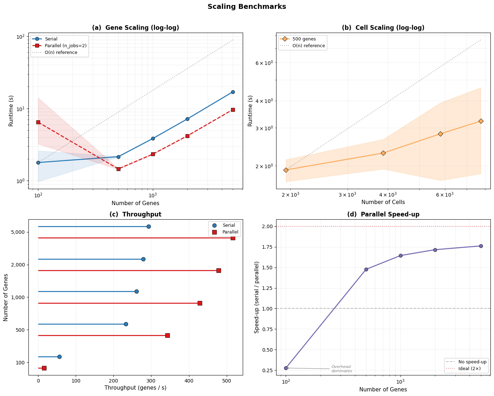

Scalability Analysis#
This notebook provides a comprehensive benchmark analysis of sctrial on a real longitudinal immunotherapy dataset (Sade‑Feldman et al., Cell 2018; GSE120575).
Benchmark Objectives#
To answer the following questions:
How does runtime scale with dataset size (cells, genes, participants)?
How do different aggregation strategies and statistical approaches compare?
How much memory is used across key operations?
Do statistical outputs look well‑behaved and consistent?
Are results reproducible across repeated runs?
Note: This notebook is a scalability and performance benchmark for sctrial, and the demonstrated analyses use subsampled data (≤500 cells per participant-visit) and a subset of genes (up to 2,000 of ~33k).
[1]:
import warnings
warnings.filterwarnings('ignore', category=FutureWarning)
warnings.filterwarnings('ignore', category=DeprecationWarning)
warnings.filterwarnings('ignore', category=RuntimeWarning, message='invalid value encountered in sqrt')
# NOTE: cluster-robust SE warning is intentionally NOT suppressed.
# With ~10 participants, cluster-robust p-values are unreliable.
# Bootstrap (use_bootstrap=True) is recommended for real analyses
# but disabled here for benchmarking speed.
import time
import psutil
import gc
from functools import wraps
from typing import Callable, Any
import numpy as np
import pandas as pd
import matplotlib.pyplot as plt
import seaborn as sns
import scanpy as sc
import scipy.sparse as sp
import sctrial as st
from statsmodels.stats.multitest import multipletests
pd.options.mode.chained_assignment = None
sc.settings.verbosity = 0
# =============================================================================
# CONFIGURATION
# =============================================================================
SEED = 42
np.random.seed(SEED)
# Analysis parameters
MIN_GENES_FOR_SCORE = 5
MIN_PAIRED_PER_ARM = 3
FDR_ALPHA = 0.25
# Benchmark parameters
MAX_CELLS_PER_PARTICIPANT_VISIT = 500
SCALING_GENE_COUNTS = [100, 500, 1000, 2000, 5000] # Gene scaling test
SCALING_CELL_FRACTIONS = [0.25, 0.5, 0.75, 1.0] # Cell scaling test
N_BENCHMARK_REPEATS = 3 # Repeats for timing stability
PARALLEL_JOBS = 2 # Jobs for did_table_parallel benchmarking
# Storage for benchmark results
benchmark_results = {
'timing': {},
'memory': {},
'scaling': [],
'validation': {}
}
# =============================================================================
# BENCHMARK UTILITIES
# =============================================================================
def timed_run(func: Callable, *args, n_repeats: int = 1, **kwargs) -> tuple[Any, float, float]:
"""Run function with timing, return (result, mean_time, std_time)."""
times = []
result = None
for _ in range(n_repeats):
if result is not None:
del result # free prior iteration's result before next run
gc.collect()
start = time.perf_counter()
result = func(*args, **kwargs)
times.append(time.perf_counter() - start)
return result, np.mean(times), np.std(times)
def memory_profile(func: Callable, *args, **kwargs) -> tuple[Any, float, float]:
"""Run function with memory profiling, return (result, delta_mb, current_mb).
Measures process RSS (Resident Set Size) before and after the function call.
RSS captures all allocations including C-level / numpy arrays, unlike
tracemalloc which only tracks Python-level allocations and can report stale
cumulative peaks across calls.
"""
gc.collect()
process = psutil.Process()
rss_before = process.memory_info().rss
result = func(*args, **kwargs)
rss_after = process.memory_info().rss
gc.collect()
delta_mb = (rss_after - rss_before) / 1024 / 1024
current_mb = rss_after / 1024 / 1024
return result, max(delta_mb, 0), current_mb
def format_time(seconds: float) -> str:
"""Format seconds to human-readable string."""
if seconds < 1:
return f"{seconds*1000:.1f}ms"
elif seconds < 60:
return f"{seconds:.2f}s"
else:
return f"{seconds/60:.1f}min"
print("=" * 70)
print("SCTRIAL SCALABILITY BENCHMARK")
print("=" * 70)
print(f"sctrial version: {st.__version__}")
print(f"Random seed: {SEED}")
print(f"Benchmark repeats: {N_BENCHMARK_REPEATS}")
======================================================================
SCTRIAL SCALABILITY BENCHMARK
======================================================================
sctrial version: 0.3.3
Random seed: 42
Benchmark repeats: 3
1. Setup & Data Loading#
Load the Sade-Feldman melanoma immunotherapy dataset and establish the trial design.
[2]:
from sctrial.datasets import load_sade_feldman
# Load with memory profiling
print("Loading dataset...")
(adata, load_time, _) = timed_run(
load_sade_feldman,
max_cells_per_participant_visit=MAX_CELLS_PER_PARTICIPANT_VISIT,
processed_name="sade_feldman_processed_v6_subsample.h5ad",
allow_download=True,
n_repeats=1
)
benchmark_results['timing']['data_load'] = load_time
print(f" Load time: {format_time(load_time)}")
Loading dataset...
Load time: 3.60s
Data Harmonization & Trial Design Setup#
[3]:
# =============================================================================
# RESPONSE HARMONIZATION
# =============================================================================
# Harmonize response labels at participant level using package API
# (assigns majority-vote label for participants with mixed response annotations)
adata = st.harmonize_response(adata)
RESPONSE_COL = "response_harmonized"
# =============================================================================
# IDENTIFY PAIRED PARTICIPANTS
# =============================================================================
visit_col = "visit"
adata.obs[visit_col] = adata.obs[visit_col].astype(str)
visits = [v for v in ["Pre", "Post"] if v in adata.obs[visit_col].unique()]
participant_summary = (
adata.obs.groupby("participant_id")[visit_col].apply(set).reset_index()
)
participant_summary["has_Pre"] = participant_summary[visit_col].apply(lambda x: "Pre" in x)
participant_summary["has_Post"] = participant_summary[visit_col].apply(lambda x: "Post" in x)
participant_summary["is_paired"] = participant_summary["has_Pre"] & participant_summary["has_Post"]
dominant_response = adata.obs.groupby("participant_id")[RESPONSE_COL].first()
participant_summary[RESPONSE_COL] = participant_summary["participant_id"].map(dominant_response)
paired_ids = set(participant_summary.loc[participant_summary["is_paired"], "participant_id"])
paired_by_response = (
participant_summary[participant_summary["is_paired"]]
.groupby(RESPONSE_COL)
.size()
.to_dict()
)
# Subset to paired participants
adata_paired = adata[adata.obs["participant_id"].isin(paired_ids)].copy()
# =============================================================================
# TRIAL DESIGN
# =============================================================================
design = st.TrialDesign(
participant_col="participant_id",
visit_col=visit_col,
arm_col=RESPONSE_COL,
arm_treated="Responder",
arm_control="Non-responder",
celltype_col="cell_type",
)
# Store dataset info for benchmarks
dataset_info = {
'n_cells_full': adata.n_obs,
'n_cells_paired': adata_paired.n_obs,
'n_genes': adata.n_vars,
'n_participants_full': adata.obs['participant_id'].nunique(),
'n_participants_paired': len(paired_ids),
'n_paired_responder': paired_by_response.get('Responder', 0),
'n_paired_nonresponder': paired_by_response.get('Non-responder', 0),
}
benchmark_results['dataset_info'] = dataset_info
design
[3]:
TrialDesign(participant_col='participant_id', visit_col='visit', arm_col='response_harmonized', arm_treated='Responder', arm_control='Non-responder', celltype_col='cell_type', crossover_col=None, baseline_visit=None, followup_visit=None)
2. Dataset Overview#
Here, we summarize the dataset characteristics and benchmark configuration in tables, then visualize key distributions to ground the benchmarking context.
[4]:
# =============================================================================
# DATASET SUMMARY TABLE
# =============================================================================
print("=" * 70)
print("DATASET SUMMARY")
print("=" * 70)
summary_df = pd.DataFrame([
("Full Dataset - Cells", f"{dataset_info['n_cells_full']:,}"),
("Full Dataset - Genes", f"{dataset_info['n_genes']:,}"),
("Full Dataset - Participants", f"{dataset_info['n_participants_full']}"),
("Paired Dataset - Cells", f"{dataset_info['n_cells_paired']:,}"),
("Paired Dataset - Participants", f"{dataset_info['n_participants_paired']}"),
(" Responders (paired)", f"{dataset_info['n_paired_responder']}"),
(" Non-responders (paired)", f"{dataset_info['n_paired_nonresponder']}"),
("Visits", f"{visits}"),
("Mixed-response participants", f"{(adata.obs.groupby('participant_id')['response'].nunique() > 1).sum()}"),
], columns=["Metric", "Value"])
display(summary_df.style.hide(axis='index'))
# =============================================================================
# BENCHMARK CONFIGURATION TABLE
# =============================================================================
config_df = pd.DataFrame([
("Scaling gene counts", f"{SCALING_GENE_COUNTS}"),
("Cell fractions", f"{SCALING_CELL_FRACTIONS}"),
("Repeats per test", f"{N_BENCHMARK_REPEATS}"),
("Min genes for scoring", f"{MIN_GENES_FOR_SCORE}"),
("Min paired per arm", f"{MIN_PAIRED_PER_ARM}"),
("FDR threshold", f"{FDR_ALPHA}"),
("Max cells/participant\u2011visit", f"{MAX_CELLS_PER_PARTICIPANT_VISIT}"),
], columns=["Parameter", "Value"])
print("\nBENCHMARK CONFIGURATION")
print("-" * 50)
display(config_df.style.hide(axis='index'))
# =============================================================================
# COMPREHENSIVE VISUALIZATION
# =============================================================================
fig, axes = plt.subplots(2, 4, figsize=(18, 10))
# 1. Cells per Response x Visit
ax1 = axes[0, 0]
cell_counts = adata_paired.obs.groupby([RESPONSE_COL, visit_col], observed=True).size().unstack(fill_value=0)
cell_counts.plot(kind="bar", ax=ax1, color=['#3498db', '#e74c3c'], edgecolor='black')
ax1.set_title("Cells by Response \u00d7 Visit", fontsize=11, fontweight='bold')
ax1.set_xlabel("Response")
ax1.set_ylabel("Number of Cells")
ax1.legend(title="Visit")
ax1.tick_params(axis='x', rotation=0)
for container in ax1.containers:
ax1.bar_label(container, fmt='%d', fontsize=8)
# 2. Participants per Response x Visit
ax2 = axes[0, 1]
pt_counts = adata_paired.obs.groupby([RESPONSE_COL, visit_col], observed=True)["participant_id"].nunique().unstack(fill_value=0)
pt_counts.plot(kind="bar", ax=ax2, color=['#3498db', '#e74c3c'], edgecolor='black')
ax2.set_title("Participants by Response \u00d7 Visit", fontsize=11, fontweight='bold')
ax2.set_xlabel("Response")
ax2.set_ylabel("Number of Participants")
ax2.legend(title="Visit")
ax2.tick_params(axis='x', rotation=0)
for container in ax2.containers:
ax2.bar_label(container, fmt='%d', fontsize=9)
# 3. Cells per Participant (strip plot — better than histogram for n=10)
ax3 = axes[0, 2]
cells_per_pt = adata_paired.obs.groupby("participant_id").size().reset_index(name="n_cells")
cells_per_pt[RESPONSE_COL] = cells_per_pt["participant_id"].map(
adata_paired.obs.groupby("participant_id")[RESPONSE_COL].first()
)
sns.stripplot(data=cells_per_pt, x=RESPONSE_COL, y="n_cells", ax=ax3,
palette={'Responder': '#2ecc71', 'Non-responder': '#e74c3c'},
size=8, jitter=0.15, edgecolor='black', linewidth=0.5)
ax3.axhline(cells_per_pt["n_cells"].mean(), color='gray', linestyle='--', alpha=0.5,
label=f'Mean: {cells_per_pt["n_cells"].mean():.0f}')
ax3.set_title("Cells per Participant", fontsize=11, fontweight='bold')
ax3.set_ylabel("Number of Cells")
ax3.legend(fontsize=8)
# 4. Cells per Participant-Visit Heatmap
ax4 = axes[0, 3]
cells_pv = adata_paired.obs.groupby(["participant_id", visit_col], observed=True).size().unstack(fill_value=0)
sns.heatmap(cells_pv, annot=True, fmt='d', cmap='YlOrRd', ax=ax4, cbar_kws={'label': 'Cells'})
ax4.set_title("Cells per Participant \u00d7 Visit", fontsize=11, fontweight='bold')
ax4.set_xlabel("Visit")
ax4.set_ylabel("Participant")
# 5. Response Balance
ax5 = axes[1, 0]
response_counts = pd.Series(paired_by_response)
colors = ['#e74c3c' if x == 'Non-responder' else '#2ecc71' for x in response_counts.index]
bars = ax5.bar(response_counts.index, response_counts.values, color=colors, edgecolor='black')
ax5.set_title("Paired Participants by Response", fontsize=11, fontweight='bold')
ax5.set_ylabel("Number of Participants")
ax5.bar_label(bars, fmt='%d', fontsize=11)
# 6. Data Sparsity (bar instead of pie — cleaner for 2-category)
ax6 = axes[1, 1]
if sp.issparse(adata_paired.X):
sparsity = 1.0 - (adata_paired.X.nnz / (adata_paired.X.shape[0] * adata_paired.X.shape[1]))
else:
sparsity = np.mean(adata_paired.X == 0)
bar_sp = ax6.bar(["Zero", "Non-zero"], [sparsity * 100, (1 - sparsity) * 100],
color=['#ecf0f1', '#3498db'], edgecolor='black')
ax6.bar_label(bar_sp, fmt='%.1f%%', fontsize=10)
ax6.set_ylabel("Percentage")
ax6.set_title(f"Expression Matrix Sparsity", fontsize=11, fontweight='bold')
ax6.set_ylim(0, 105)
# 7. Gene Detection per Cell
ax7 = axes[1, 2]
if sp.issparse(adata_paired.X):
genes_per_cell = np.array((adata_paired.X > 0).sum(axis=1)).flatten()
else:
genes_per_cell = np.sum(adata_paired.X > 0, axis=1)
ax7.hist(genes_per_cell, bins=30, color='#9b59b6', edgecolor='black', alpha=0.7)
ax7.axvline(np.mean(genes_per_cell), color='red', linestyle='--', label=f'Mean: {np.mean(genes_per_cell):.0f}')
ax7.set_title("Genes Detected per Cell", fontsize=11, fontweight='bold')
ax7.set_xlabel("Number of Genes")
ax7.set_ylabel("Frequency")
ax7.legend(fontsize=8)
# 8. Memory Footprint (log scale for readability)
ax8 = axes[1, 3]
if sp.issparse(adata_paired.X):
matrix_mb = adata_paired.X.data.nbytes / 1024 / 1024
else:
matrix_mb = adata_paired.X.nbytes / 1024 / 1024
obs_mb = adata_paired.obs.memory_usage(deep=True).sum() / 1024 / 1024
var_mb = adata_paired.var.memory_usage(deep=True).sum() / 1024 / 1024
mem_data = pd.Series({'Expression\nMatrix': matrix_mb, 'Observations\n(obs)': obs_mb, 'Variables\n(var)': var_mb})
mem_data.plot(kind='barh', ax=ax8, color=['#3498db', '#2ecc71', '#e74c3c'], edgecolor='black', log=True)
ax8.set_title("Memory Footprint", fontsize=11, fontweight='bold')
ax8.set_xlabel("Memory (MB, log scale)")
for i, v in enumerate(mem_data):
ax8.text(v * 1.3, i, f'{v:.1f} MB', va='center', fontsize=9)
plt.suptitle("Dataset Overview for Benchmark Analysis", fontsize=14, fontweight='bold')
plt.tight_layout()
plt.show()
print(f"\nTotal estimated memory: {matrix_mb + obs_mb + var_mb:.1f} MB")
======================================================================
DATASET SUMMARY
======================================================================
| Metric | Value |
|---|---|
| Full Dataset - Cells | 15,166 |
| Full Dataset - Genes | 55,330 |
| Full Dataset - Participants | 32 |
| Paired Dataset - Cells | 7,744 |
| Paired Dataset - Participants | 11 |
| Responders (paired) | 3 |
| Non-responders (paired) | 8 |
| Visits | ['Pre', 'Post'] |
| Mixed-response participants | 0 |
BENCHMARK CONFIGURATION
--------------------------------------------------
| Parameter | Value |
|---|---|
| Scaling gene counts | [100, 500, 1000, 2000, 5000] |
| Cell fractions | [0.25, 0.5, 0.75, 1.0] |
| Repeats per test | 3 |
| Min genes for scoring | 5 |
| Min paired per arm | 3 |
| FDR threshold | 0.25 |
| Max cells/participant‑visit | 500 |

Total estimated memory: 3275.8 MB
3. Gene Signature Scoring#
Score biologically relevant gene signatures for downstream analysis.
[5]:
# =============================================================================
# DEFINE GENE SIGNATURES
# =============================================================================
available = set(adata_paired.var_names)
raw_signatures = {
"Cytotoxicity": ["GZMB", "GZMA", "GZMH", "GZMK", "PRF1", "GNLY", "IFNG", "NKG7", "KLRD1", "KLRB1", "FASLG"],
"Exhaustion": ["PDCD1", "LAG3", "HAVCR2", "TIGIT", "CTLA4", "TOX", "ENTPD1", "CXCL13", "EOMES"],
"IFN_Response": ["ISG15", "IFI6", "IFIT1", "IFIT2", "IFIT3", "MX1", "MX2", "STAT1", "OAS1", "IRF7"],
"Memory": ["IL7R", "TCF7", "LEF1", "CCR7", "SELL", "CD27", "CD28"],
"Activation": ["CD69", "CD38", "HLA-DRA", "ICOS", "CD44", "IL2RA"],
}
# Filter signatures by gene availability
print("Signature Gene Coverage:")
print("-" * 50)
filtered_signatures = {}
coverage_data = []
for name, genes in raw_signatures.items():
found = [g for g in genes if g in available]
pct = len(found) / len(genes) * 100
status = "OK" if len(found) >= MIN_GENES_FOR_SCORE else "SKIP"
coverage_data.append({
'Signature': name,
'Found': len(found),
'Total': len(genes),
'Coverage': f"{pct:.0f}%",
'Status': status
})
if len(found) >= MIN_GENES_FOR_SCORE:
filtered_signatures[name] = found
coverage_df = pd.DataFrame(coverage_data)
display(coverage_df.style.hide(axis='index'))
# =============================================================================
# SCORE SIGNATURES WITH TIMING
# =============================================================================
if filtered_signatures:
def score_signatures():
return st.score_gene_sets(
adata_paired,
filtered_signatures,
layer="log1p_tpm",
method="zmean",
prefix="sig_",
)
_, score_time, score_std = timed_run(score_signatures, n_repeats=N_BENCHMARK_REPEATS)
benchmark_results['timing']['signature_scoring'] = score_time
print(f"\nSignature scoring time: {format_time(score_time)} ± {format_time(score_std)}")
print(f"Signatures scored: {len(filtered_signatures)}")
signature_cols = [c for c in adata_paired.obs.columns if c.startswith("sig_")]
# Visualize signature distributions
if signature_cols:
fig, axes = plt.subplots(2, 3, figsize=(14, 8))
axes = axes.flatten()
for i, col in enumerate(signature_cols[:6]):
ax = axes[i]
for response in adata_paired.obs[RESPONSE_COL].unique():
mask = adata_paired.obs[RESPONSE_COL] == response
data = adata_paired.obs.loc[mask, col].dropna()
ax.hist(data, bins=30, alpha=0.5, label=response, density=True)
ax.set_title(col.replace('sig_', ''), fontweight='bold')
ax.set_xlabel('Score')
ax.set_ylabel('Density')
ax.legend()
# Hide unused axes
for j in range(len(signature_cols), 6):
axes[j].axis('off')
plt.suptitle("Signature Score Distributions by Response", fontsize=14, fontweight='bold')
plt.tight_layout()
plt.show()
Signature Gene Coverage:
--------------------------------------------------
| Signature | Found | Total | Coverage | Status |
|---|---|---|---|---|
| Cytotoxicity | 11 | 11 | 100% | OK |
| Exhaustion | 9 | 9 | 100% | OK |
| IFN_Response | 10 | 10 | 100% | OK |
| Memory | 7 | 7 | 100% | OK |
| Activation | 6 | 6 | 100% | OK |
Signature scoring time: 164.1ms ± 198.8ms
Signatures scored: 5

[6]:
# =============================================================================
# PAIRING VERIFICATION
# =============================================================================
print("Pairing Verification")
print("-" * 50)
if signature_cols:
df_pv = (
adata_paired.obs
.groupby([design.participant_col, design.visit_col, design.arm_col], observed=True)[signature_cols]
.mean()
.reset_index()
)
valid_paired = {}
for feat in signature_cols:
wide = df_pv.pivot(index=design.participant_col, columns=design.visit_col, values=feat)
if visits[0] in wide.columns and visits[1] in wide.columns:
mask = wide[visits[0]].notna() & wide[visits[1]].notna()
valid_paired[feat] = set(wide[mask].index)
else:
valid_paired[feat] = set()
all_features_valid = set.intersection(*[valid_paired[f] for f in signature_cols]) if signature_cols else set()
participant_arm = adata_paired.obs.groupby(design.participant_col)[design.arm_col].first()
VALID_PAIRED_BY_RESPONSE = {
arm: {pid for pid in all_features_valid if participant_arm.get(pid) == arm}
for arm in [design.arm_treated, design.arm_control]
}
N_VALID_PAIRED = len(all_features_valid)
print(f"Participants with valid Pre+Post scores: {N_VALID_PAIRED}")
print(f" {design.arm_treated}: {len(VALID_PAIRED_BY_RESPONSE[design.arm_treated])}")
print(f" {design.arm_control}: {len(VALID_PAIRED_BY_RESPONSE[design.arm_control])}")
else:
VALID_PAIRED_BY_RESPONSE = paired_by_response
N_VALID_PAIRED = len(paired_ids)
Pairing Verification
--------------------------------------------------
Participants with valid Pre+Post scores: 11
Responder: 3
Non-responder: 8
4. Scaling Benchmarks#
Here, we benchmark how sctrial scales with dataset size. We vary gene counts and cell fractions to stress‑test performance.
Cell fractions refer to keeping a fixed proportion of cells (e.g., 25%, 50%, 75%, 100%) via stratified subsampling within each participant‑visit, preserving pairing and structure.
Method comparison evaluates the same study design (Responder vs Non‑responder; Pre vs Post) under different aggregation and analysis strategies.
[7]:
# =============================================================================
# SCALING BENCHMARK: Genes
# =============================================================================
print("=" * 70)
print("GENE SCALING BENCHMARK")
print("=" * 70)
print(f"Testing DiD performance across {len(SCALING_GENE_COUNTS)} gene counts...")
gene_scaling_results = []
for n_genes in SCALING_GENE_COUNTS:
if n_genes > adata_paired.n_vars:
print(f" Skipping {n_genes} genes (exceeds available {adata_paired.n_vars})")
continue
# Select genes
_test_genes = list(adata_paired.var_names[:n_genes])
# Benchmark DiD (serial) — capture loop variable via default arg
def run_did(genes=_test_genes):
return st.did_table(
adata_paired,
features=genes,
design=design,
visits=tuple(visits),
aggregate="participant_visit",
layer="log1p_tpm",
)
# Benchmark DiD (parallel)
def run_did_parallel(genes=_test_genes):
return st.did_table_parallel(
adata_paired,
features=genes,
design=design,
visits=tuple(visits),
aggregate="participant_visit",
layer="log1p_tpm",
n_jobs=PARALLEL_JOBS,
)
_, mean_time, std_time = timed_run(run_did, n_repeats=N_BENCHMARK_REPEATS)
_, mean_time_par, std_time_par = timed_run(run_did_parallel, n_repeats=N_BENCHMARK_REPEATS)
gene_scaling_results.append({
'n_genes': n_genes,
'mean_time': mean_time,
'std_time': std_time,
'genes_per_sec': n_genes / mean_time,
'mean_time_parallel': mean_time_par,
'std_time_parallel': std_time_par,
'genes_per_sec_parallel': n_genes / mean_time_par,
})
print(f" {n_genes:,} genes: serial {format_time(mean_time)} ± {format_time(std_time)} "
f"({n_genes/mean_time:.0f} genes/sec) | parallel {format_time(mean_time_par)} ± {format_time(std_time_par)} "
f"({n_genes/mean_time_par:.0f} genes/sec)")
# Free intermediate results between iterations to limit memory growth
del _test_genes
gc.collect()
gene_scaling_df = pd.DataFrame(gene_scaling_results)
benchmark_results['scaling'].append(('genes', gene_scaling_df))
# =============================================================================
# SCALING BENCHMARK: Cells
# =============================================================================
print("\n" + "=" * 70)
print("CELL SCALING BENCHMARK")
print("=" * 70)
print(f"Testing DiD performance across {len(SCALING_CELL_FRACTIONS)} cell fractions...")
print("Cell fractions keep a fixed proportion of cells per participant-visit (stratified), preserving pairing.")
cell_scaling_results = []
n_test_genes = 500 # Fixed gene count for cell scaling test
for frac in SCALING_CELL_FRACTIONS:
n_cells = int(adata_paired.n_obs * frac)
# Subsample cells (stratified by participant-visit)
if frac < 1.0:
sampled_idx = (
adata_paired.obs
.groupby([design.participant_col, design.visit_col], observed=True)
.apply(lambda x: x.sample(frac=frac, random_state=SEED) if len(x) > 1 else x)
.index.get_level_values(-1)
)
adata_sub = adata_paired[sampled_idx].copy()
else:
adata_sub = adata_paired
_test_genes_cell = list(adata_sub.var_names[:n_test_genes])
# Capture loop variables via default args
def run_did_cells(ad=adata_sub, genes=_test_genes_cell):
return st.did_table(
ad,
features=genes,
design=design,
visits=tuple(visits),
aggregate="participant_visit",
layer="log1p_tpm",
)
_, mean_time, std_time = timed_run(run_did_cells, n_repeats=N_BENCHMARK_REPEATS)
cell_scaling_results.append({
'cell_fraction': frac,
'n_cells': adata_sub.n_obs,
'mean_time': mean_time,
'std_time': std_time,
})
print(f" {frac*100:.0f}% ({adata_sub.n_obs:,} cells): {format_time(mean_time)} ± {format_time(std_time)}")
# Free subsampled AnnData between iterations
if frac < 1.0:
del adata_sub, sampled_idx
del _test_genes_cell
gc.collect()
cell_scaling_df = pd.DataFrame(cell_scaling_results)
benchmark_results['scaling'].append(('cells', cell_scaling_df))
# =============================================================================
# SCALING VISUALIZATION (publication-quality 2x2 panel)
# =============================================================================
fig, axes = plt.subplots(2, 2, figsize=(14, 11))
# ---- Colour palette & common style ----
C_SERIAL = '#2c7bb6'
C_PARALLEL = '#d7191c'
C_CELL = '#fdae61'
C_THRU_S = '#2c7bb6'
C_THRU_P = '#d7191c'
MARKER_KW = dict(markersize=7, markeredgecolor='black', markeredgewidth=0.6)
# ---- (a) Gene-scaling: log-log with error bands ----
ax = axes[0, 0]
x_g = gene_scaling_df['n_genes'].values
y_s = gene_scaling_df['mean_time'].values
e_s = gene_scaling_df['std_time'].values
ax.fill_between(x_g, np.maximum(y_s - e_s, y_s * 0.5), y_s + e_s, color=C_SERIAL, alpha=0.12, zorder=1)
ax.plot(x_g, y_s, 'o-', color=C_SERIAL, linewidth=2, label='Serial', **MARKER_KW)
if 'mean_time_parallel' in gene_scaling_df.columns:
y_p = gene_scaling_df['mean_time_parallel'].values
e_p = gene_scaling_df['std_time_parallel'].values
ax.fill_between(x_g, np.maximum(y_p - e_p, y_p * 0.5), y_p + e_p, color=C_PARALLEL, alpha=0.12, zorder=2)
ax.plot(x_g, y_p, 's--', color=C_PARALLEL, linewidth=2,
label=f'Parallel (n_jobs={PARALLEL_JOBS})', **MARKER_KW)
# Log-log + linear-scaling reference line
ax.set_xscale('log'); ax.set_yscale('log')
x_ref = np.array([x_g.min(), x_g.max()])
scale = y_s[0] / x_g[0]
ax.plot(x_ref, x_ref * scale, ':', color='grey', alpha=0.6, label='O(n) reference')
ax.legend(fontsize=9, framealpha=0.9)
ax.set_xlabel('Number of Genes', fontsize=11)
ax.set_ylabel('Runtime (s)', fontsize=11)
ax.set_title('(a) Gene Scaling (log-log)', fontsize=12, fontweight='bold')
ax.grid(True, which='both', alpha=0.2)
# ---- (b) Cell-scaling: log-log with error band ----
ax = axes[0, 1]
x_c = cell_scaling_df['n_cells'].values
y_c = cell_scaling_df['mean_time'].values
e_c = cell_scaling_df['std_time'].values
ax.fill_between(x_c, np.maximum(y_c - e_c, y_c * 0.5), y_c + e_c, color=C_CELL, alpha=0.25)
ax.plot(x_c, y_c, 'D-', color=C_CELL, linewidth=2, label='500 genes', **MARKER_KW)
ax.set_xscale('log'); ax.set_yscale('log')
scale_c = y_c[0] / x_c[0]
ax.plot([x_c.min(), x_c.max()],
[x_c.min() * scale_c, x_c.max() * scale_c],
':', color='grey', alpha=0.6, label='O(n) reference')
ax.legend(fontsize=9, framealpha=0.9)
ax.set_xlabel('Number of Cells', fontsize=11)
ax.set_ylabel('Runtime (s)', fontsize=11)
ax.set_title('(b) Cell Scaling (log-log)', fontsize=12, fontweight='bold')
ax.grid(True, which='both', alpha=0.2)
# ---- (c) Throughput: serial vs parallel grouped lollipop ----
ax = axes[1, 0]
labels = gene_scaling_df['n_genes'].astype(str).values
y_pos = np.arange(len(labels))
width = 0.35
thru_s = gene_scaling_df['genes_per_sec'].values
ax.hlines(y_pos + width/2, 0, thru_s, color=C_THRU_S, linewidth=2)
ax.plot(thru_s, y_pos + width/2, 'o', color=C_THRU_S, markersize=8,
markeredgecolor='black', markeredgewidth=0.6, label='Serial')
if 'genes_per_sec_parallel' in gene_scaling_df.columns:
thru_p = gene_scaling_df['genes_per_sec_parallel'].values
ax.hlines(y_pos - width/2, 0, thru_p, color=C_THRU_P, linewidth=2)
ax.plot(thru_p, y_pos - width/2, 's', color=C_THRU_P, markersize=8,
markeredgecolor='black', markeredgewidth=0.6, label='Parallel')
ax.set_yticks(y_pos)
ax.set_yticklabels([f'{int(x):,}' for x in gene_scaling_df['n_genes']])
ax.set_ylabel('Number of Genes', fontsize=11)
ax.set_xlabel('Throughput (genes / s)', fontsize=11)
ax.set_title('(c) Throughput', fontsize=12, fontweight='bold')
ax.legend(fontsize=9, framealpha=0.9)
ax.grid(True, axis='x', alpha=0.2)
# ---- (d) Parallel speed-up factor ----
ax = axes[1, 1]
if 'mean_time_parallel' in gene_scaling_df.columns:
speedup = gene_scaling_df['mean_time'] / gene_scaling_df['mean_time_parallel']
ax.plot(x_g, speedup, 'o-', color='#756bb1', linewidth=2, **MARKER_KW)
ax.axhline(1.0, color='grey', linestyle='--', alpha=0.5, label='No speed-up')
ax.annotate('Overhead\ndominates',
xy=(x_g[0], speedup.iloc[0]),
xytext=(x_g[0] * 2.5, speedup.iloc[0] - 0.05),
fontsize=8, color='grey', fontstyle='italic',
arrowprops=dict(arrowstyle='->', color='grey', lw=0.8))
ax.axhline(PARALLEL_JOBS, color='#d7191c', linestyle=':', alpha=0.5,
label=f'Ideal ({PARALLEL_JOBS}\u00d7)')
ax.set_xscale('log')
ax.set_xlabel('Number of Genes', fontsize=11)
ax.set_ylabel('Speed-up (serial / parallel)', fontsize=11)
ax.set_title('(d) Parallel Speed-up', fontsize=12, fontweight='bold')
ax.legend(fontsize=9, framealpha=0.9)
ax.grid(True, which='both', alpha=0.2)
else:
ax.text(0.5, 0.5, 'Parallel data\nnot available',
ha='center', va='center', transform=ax.transAxes, fontsize=12, color='grey')
ax.set_title('(d) Parallel Speed-up', fontsize=12, fontweight='bold')
plt.suptitle('Scaling Benchmarks', fontsize=14, fontweight='bold', y=1.01)
plt.tight_layout()
plt.show()
======================================================================
GENE SCALING BENCHMARK
======================================================================
Testing DiD performance across 5 gene counts...
100 genes: serial 690.2ms ± 10.0ms (145 genes/sec) | parallel 1.37s ± 1.11s (73 genes/sec)
100 genes: serial 1.78s ± 811.4ms (56 genes/sec) | parallel 6.46s ± 7.56s (15 genes/sec)
500 genes: serial 2.15s ± 27.8ms (232 genes/sec) | parallel 1.46s ± 21.4ms (343 genes/sec)
1,000 genes: serial 3.84s ± 44.7ms (261 genes/sec) | parallel 2.33s ± 31.4ms (429 genes/sec)
/Users/vasanthakup/Documents/Work/umcAmsterdam/sctrial/sctrial_venv/lib/python3.13/site-packages/statsmodels/regression/linear_model.py:1884: RuntimeWarning: invalid value encountered in sqrt
return np.sqrt(np.diag(self.cov_params()))
/Users/vasanthakup/Documents/Work/umcAmsterdam/sctrial/sctrial_venv/lib/python3.13/site-packages/statsmodels/regression/linear_model.py:1884: RuntimeWarning: invalid value encountered in sqrt
return np.sqrt(np.diag(self.cov_params()))
/Users/vasanthakup/Documents/Work/umcAmsterdam/sctrial/sctrial_venv/lib/python3.13/site-packages/statsmodels/regression/linear_model.py:1884: RuntimeWarning: invalid value encountered in sqrt
return np.sqrt(np.diag(self.cov_params()))
/Users/vasanthakup/Documents/Work/umcAmsterdam/sctrial/sctrial_venv/lib/python3.13/site-packages/statsmodels/regression/linear_model.py:1884: RuntimeWarning: invalid value encountered in sqrt
return np.sqrt(np.diag(self.cov_params()))
/Users/vasanthakup/Documents/Work/umcAmsterdam/sctrial/sctrial_venv/lib/python3.13/site-packages/statsmodels/regression/linear_model.py:1884: RuntimeWarning: invalid value encountered in sqrt
return np.sqrt(np.diag(self.cov_params()))
/Users/vasanthakup/Documents/Work/umcAmsterdam/sctrial/sctrial_venv/lib/python3.13/site-packages/statsmodels/regression/linear_model.py:1884: RuntimeWarning: invalid value encountered in sqrt
return np.sqrt(np.diag(self.cov_params()))
2,000 genes: serial 7.16s ± 32.1ms (279 genes/sec) | parallel 4.18s ± 39.8ms (479 genes/sec)
/Users/vasanthakup/Documents/Work/umcAmsterdam/sctrial/sctrial_venv/lib/python3.13/site-packages/statsmodels/regression/linear_model.py:1884: RuntimeWarning: invalid value encountered in sqrt
return np.sqrt(np.diag(self.cov_params()))
/Users/vasanthakup/Documents/Work/umcAmsterdam/sctrial/sctrial_venv/lib/python3.13/site-packages/statsmodels/regression/linear_model.py:1884: RuntimeWarning: invalid value encountered in sqrt
return np.sqrt(np.diag(self.cov_params()))
/Users/vasanthakup/Documents/Work/umcAmsterdam/sctrial/sctrial_venv/lib/python3.13/site-packages/statsmodels/regression/linear_model.py:1884: RuntimeWarning: invalid value encountered in sqrt
return np.sqrt(np.diag(self.cov_params()))
/Users/vasanthakup/Documents/Work/umcAmsterdam/sctrial/sctrial_venv/lib/python3.13/site-packages/statsmodels/regression/linear_model.py:1884: RuntimeWarning: invalid value encountered in sqrt
return np.sqrt(np.diag(self.cov_params()))
/Users/vasanthakup/Documents/Work/umcAmsterdam/sctrial/sctrial_venv/lib/python3.13/site-packages/statsmodels/regression/linear_model.py:1884: RuntimeWarning: invalid value encountered in sqrt
return np.sqrt(np.diag(self.cov_params()))
/Users/vasanthakup/Documents/Work/umcAmsterdam/sctrial/sctrial_venv/lib/python3.13/site-packages/statsmodels/regression/linear_model.py:1884: RuntimeWarning: invalid value encountered in sqrt
return np.sqrt(np.diag(self.cov_params()))
/Users/vasanthakup/Documents/Work/umcAmsterdam/sctrial/sctrial_venv/lib/python3.13/site-packages/statsmodels/regression/linear_model.py:1884: RuntimeWarning: invalid value encountered in sqrt
return np.sqrt(np.diag(self.cov_params()))
/Users/vasanthakup/Documents/Work/umcAmsterdam/sctrial/sctrial_venv/lib/python3.13/site-packages/statsmodels/regression/linear_model.py:1884: RuntimeWarning: invalid value encountered in sqrt
return np.sqrt(np.diag(self.cov_params()))
/Users/vasanthakup/Documents/Work/umcAmsterdam/sctrial/sctrial_venv/lib/python3.13/site-packages/statsmodels/regression/linear_model.py:1884: RuntimeWarning: invalid value encountered in sqrt
return np.sqrt(np.diag(self.cov_params()))
/Users/vasanthakup/Documents/Work/umcAmsterdam/sctrial/sctrial_venv/lib/python3.13/site-packages/statsmodels/regression/linear_model.py:1884: RuntimeWarning: invalid value encountered in sqrt
return np.sqrt(np.diag(self.cov_params()))
/Users/vasanthakup/Documents/Work/umcAmsterdam/sctrial/sctrial_venv/lib/python3.13/site-packages/statsmodels/regression/linear_model.py:1884: RuntimeWarning: invalid value encountered in sqrt
return np.sqrt(np.diag(self.cov_params()))
/Users/vasanthakup/Documents/Work/umcAmsterdam/sctrial/sctrial_venv/lib/python3.13/site-packages/statsmodels/regression/linear_model.py:1884: RuntimeWarning: invalid value encountered in sqrt
return np.sqrt(np.diag(self.cov_params()))
/Users/vasanthakup/Documents/Work/umcAmsterdam/sctrial/sctrial_venv/lib/python3.13/site-packages/statsmodels/regression/linear_model.py:1884: RuntimeWarning: invalid value encountered in sqrt
return np.sqrt(np.diag(self.cov_params()))
/Users/vasanthakup/Documents/Work/umcAmsterdam/sctrial/sctrial_venv/lib/python3.13/site-packages/statsmodels/regression/linear_model.py:1884: RuntimeWarning: invalid value encountered in sqrt
return np.sqrt(np.diag(self.cov_params()))
/Users/vasanthakup/Documents/Work/umcAmsterdam/sctrial/sctrial_venv/lib/python3.13/site-packages/statsmodels/regression/linear_model.py:1884: RuntimeWarning: invalid value encountered in sqrt
return np.sqrt(np.diag(self.cov_params()))
5,000 genes: serial 17.05s ± 145.1ms (293 genes/sec) | parallel 9.68s ± 27.3ms (517 genes/sec)
======================================================================
CELL SCALING BENCHMARK
======================================================================
Testing DiD performance across 4 cell fractions...
Cell fractions keep a fixed proportion of cells per participant-visit (stratified), preserving pairing.
25% (1,936 cells): 1.91s ± 222.5ms
50% (3,872 cells): 2.29s ± 359.0ms
75% (5,808 cells): 2.81s ± 1.10s
100% (7,744 cells): 3.22s ± 1.38s

[8]:
# =============================================================================
# METHOD COMPARISON BENCHMARK
# =============================================================================
print("=" * 70)
print("METHOD COMPARISON BENCHMARK")
print("=" * 70)
print("This compares: (1) DiD aggregation modes (participant_visit vs cell),")
print("(2) cross-sectional between-arm contrasts at each visit,")
print("and (3) within-arm paired changes. All use the same trial design and feature set.")
method_results = []
# Test different aggregation strategies
agg_modes = ["participant_visit", "cell"]
test_features = signature_cols if signature_cols else list(adata_paired.var_names[:100])
print("\nAggregation Mode Comparison:")
print("-" * 50)
for agg_mode in agg_modes:
def run_agg_test(_agg=agg_mode):
return st.did_table(
adata_paired,
features=test_features,
design=design,
visits=tuple(visits),
aggregate=_agg,
layer="log1p_tpm",
)
try:
result, mean_time, std_time = timed_run(run_agg_test, n_repeats=N_BENCHMARK_REPEATS)
n_results = len(result) if result is not None else 0
method_results.append({
'method': f'DiD ({agg_mode})',
'mean_time': mean_time,
'std_time': std_time,
'n_results': n_results
})
print(f" {agg_mode}: {format_time(mean_time)} ± {format_time(std_time)}")
except Exception as e:
print(f" {agg_mode}: FAILED - {e}")
gc.collect()
# Test cross-sectional comparisons
print("\nCross-sectional Comparison:")
print("-" * 50)
for v in visits:
def run_cross(_v=v):
return st.between_arm_comparison(
adata_paired,
visit=_v,
features=test_features,
design=design,
aggregate="participant_visit",
layer="log1p_tpm",
)
result, mean_time, std_time = timed_run(run_cross, n_repeats=N_BENCHMARK_REPEATS)
method_results.append({
'method': f'Cross-sectional ({v})',
'mean_time': mean_time,
'std_time': std_time,
'n_results': len(result) if result is not None else 0
})
print(f" {v}: {format_time(mean_time)} ± {format_time(std_time)}")
gc.collect()
# Test within-arm comparisons
print("\nWithin-arm Comparison:")
print("-" * 50)
for arm in [design.arm_treated, design.arm_control]:
if paired_by_response.get(arm, 0) < MIN_PAIRED_PER_ARM:
print(f" {arm}: SKIPPED (insufficient participants)")
continue
def run_within(_arm=arm):
return st.within_arm_comparison(
adata_paired,
arm=_arm,
features=test_features,
design=design,
visits=tuple(visits),
aggregate="participant_visit",
layer="log1p_tpm",
)
result, mean_time, std_time = timed_run(run_within, n_repeats=N_BENCHMARK_REPEATS)
method_results.append({
'method': f'Within-arm ({arm})',
'mean_time': mean_time,
'std_time': std_time,
'n_results': len(result) if result is not None else 0
})
print(f" {arm}: {format_time(mean_time)} ± {format_time(std_time)}")
gc.collect()
method_df = pd.DataFrame(method_results)
benchmark_results['timing']['methods'] = method_df
# Visualization — horizontal lollipop chart with error bars
fig, ax = plt.subplots(figsize=(10, 5))
y_pos = np.arange(len(method_df))
palette = plt.cm.Set2(np.linspace(0, 1, len(method_df)))
ax.hlines(y_pos, 0, method_df['mean_time'], color='#aaaaaa', linewidth=1.5)
ax.errorbar(method_df['mean_time'], y_pos,
xerr=method_df['std_time'], fmt='none', ecolor='#555555',
capsize=4, capthick=1.2, zorder=3)
ax.scatter(method_df['mean_time'], y_pos, c=palette, s=120,
edgecolors='black', linewidths=0.8, zorder=4)
for i, (t, s) in enumerate(zip(method_df['mean_time'], method_df['std_time'])):
ax.text(t + s + 0.02, i, format_time(t), va='center', fontsize=10, fontweight='bold')
ax.set_yticks(y_pos)
ax.set_yticklabels(method_df['method'], fontsize=10)
ax.set_xlabel('Runtime (seconds)', fontsize=11)
ax.set_title('Method Comparison: Runtime', fontsize=13, fontweight='bold')
ax.grid(True, axis='x', alpha=0.2)
ax.set_axisbelow(True)
ax.margins(x=0.15)
plt.tight_layout()
plt.show()
======================================================================
METHOD COMPARISON BENCHMARK
======================================================================
This compares: (1) DiD aggregation modes (participant_visit vs cell),
(2) cross-sectional between-arm contrasts at each visit,
and (3) within-arm paired changes. All use the same trial design and feature set.
Aggregation Mode Comparison:
--------------------------------------------------
participant_visit: 528.4ms ± 11.6ms
cell: 597.5ms ± 20.4ms
Cross-sectional Comparison:
--------------------------------------------------
Pre: 832.1ms ± 647.4ms
Post: 812.9ms ± 661.6ms
Within-arm Comparison:
--------------------------------------------------
/var/folders/xl/pr40r62n3wx54s8_6cgjzg2c0000gt/T/ipykernel_22339/988223502.py:82: UserWarning: Only 3 clusters (participants) available. Cluster-robust standard errors are unreliable with fewer than 10 clusters. Consider using use_bootstrap=True for more reliable p-values.
return st.within_arm_comparison(
/var/folders/xl/pr40r62n3wx54s8_6cgjzg2c0000gt/T/ipykernel_22339/988223502.py:82: UserWarning: Only 3 clusters (participants) available. Cluster-robust standard errors are unreliable with fewer than 10 clusters. Consider using use_bootstrap=True for more reliable p-values.
return st.within_arm_comparison(
/var/folders/xl/pr40r62n3wx54s8_6cgjzg2c0000gt/T/ipykernel_22339/988223502.py:82: UserWarning: Only 3 clusters (participants) available. Cluster-robust standard errors are unreliable with fewer than 10 clusters. Consider using use_bootstrap=True for more reliable p-values.
return st.within_arm_comparison(
/var/folders/xl/pr40r62n3wx54s8_6cgjzg2c0000gt/T/ipykernel_22339/988223502.py:82: UserWarning: Only 3 clusters (participants) available. Cluster-robust standard errors are unreliable with fewer than 10 clusters. Consider using use_bootstrap=True for more reliable p-values.
return st.within_arm_comparison(
/var/folders/xl/pr40r62n3wx54s8_6cgjzg2c0000gt/T/ipykernel_22339/988223502.py:82: UserWarning: Only 3 clusters (participants) available. Cluster-robust standard errors are unreliable with fewer than 10 clusters. Consider using use_bootstrap=True for more reliable p-values.
return st.within_arm_comparison(
/var/folders/xl/pr40r62n3wx54s8_6cgjzg2c0000gt/T/ipykernel_22339/988223502.py:82: UserWarning: Only 3 clusters (participants) available. Cluster-robust standard errors are unreliable with fewer than 10 clusters. Consider using use_bootstrap=True for more reliable p-values.
return st.within_arm_comparison(
/var/folders/xl/pr40r62n3wx54s8_6cgjzg2c0000gt/T/ipykernel_22339/988223502.py:82: UserWarning: Only 3 clusters (participants) available. Cluster-robust standard errors are unreliable with fewer than 10 clusters. Consider using use_bootstrap=True for more reliable p-values.
return st.within_arm_comparison(
/var/folders/xl/pr40r62n3wx54s8_6cgjzg2c0000gt/T/ipykernel_22339/988223502.py:82: UserWarning: Only 3 clusters (participants) available. Cluster-robust standard errors are unreliable with fewer than 10 clusters. Consider using use_bootstrap=True for more reliable p-values.
return st.within_arm_comparison(
/var/folders/xl/pr40r62n3wx54s8_6cgjzg2c0000gt/T/ipykernel_22339/988223502.py:82: UserWarning: Only 3 clusters (participants) available. Cluster-robust standard errors are unreliable with fewer than 10 clusters. Consider using use_bootstrap=True for more reliable p-values.
return st.within_arm_comparison(
/var/folders/xl/pr40r62n3wx54s8_6cgjzg2c0000gt/T/ipykernel_22339/988223502.py:82: UserWarning: Only 3 clusters (participants) available. Cluster-robust standard errors are unreliable with fewer than 10 clusters. Consider using use_bootstrap=True for more reliable p-values.
return st.within_arm_comparison(
/var/folders/xl/pr40r62n3wx54s8_6cgjzg2c0000gt/T/ipykernel_22339/988223502.py:82: UserWarning: Only 3 clusters (participants) available. Cluster-robust standard errors are unreliable with fewer than 10 clusters. Consider using use_bootstrap=True for more reliable p-values.
return st.within_arm_comparison(
/var/folders/xl/pr40r62n3wx54s8_6cgjzg2c0000gt/T/ipykernel_22339/988223502.py:82: UserWarning: Only 3 clusters (participants) available. Cluster-robust standard errors are unreliable with fewer than 10 clusters. Consider using use_bootstrap=True for more reliable p-values.
return st.within_arm_comparison(
/var/folders/xl/pr40r62n3wx54s8_6cgjzg2c0000gt/T/ipykernel_22339/988223502.py:82: UserWarning: Only 3 clusters (participants) available. Cluster-robust standard errors are unreliable with fewer than 10 clusters. Consider using use_bootstrap=True for more reliable p-values.
return st.within_arm_comparison(
/var/folders/xl/pr40r62n3wx54s8_6cgjzg2c0000gt/T/ipykernel_22339/988223502.py:82: UserWarning: Only 3 clusters (participants) available. Cluster-robust standard errors are unreliable with fewer than 10 clusters. Consider using use_bootstrap=True for more reliable p-values.
return st.within_arm_comparison(
/var/folders/xl/pr40r62n3wx54s8_6cgjzg2c0000gt/T/ipykernel_22339/988223502.py:82: UserWarning: Only 3 clusters (participants) available. Cluster-robust standard errors are unreliable with fewer than 10 clusters. Consider using use_bootstrap=True for more reliable p-values.
return st.within_arm_comparison(
Responder: 562.6ms ± 260.2ms
/var/folders/xl/pr40r62n3wx54s8_6cgjzg2c0000gt/T/ipykernel_22339/988223502.py:82: UserWarning: Only 8 clusters (participants) available. Cluster-robust standard errors are unreliable with fewer than 10 clusters. Consider using use_bootstrap=True for more reliable p-values.
return st.within_arm_comparison(
/var/folders/xl/pr40r62n3wx54s8_6cgjzg2c0000gt/T/ipykernel_22339/988223502.py:82: UserWarning: Only 8 clusters (participants) available. Cluster-robust standard errors are unreliable with fewer than 10 clusters. Consider using use_bootstrap=True for more reliable p-values.
return st.within_arm_comparison(
/var/folders/xl/pr40r62n3wx54s8_6cgjzg2c0000gt/T/ipykernel_22339/988223502.py:82: UserWarning: Only 8 clusters (participants) available. Cluster-robust standard errors are unreliable with fewer than 10 clusters. Consider using use_bootstrap=True for more reliable p-values.
return st.within_arm_comparison(
/var/folders/xl/pr40r62n3wx54s8_6cgjzg2c0000gt/T/ipykernel_22339/988223502.py:82: UserWarning: Only 8 clusters (participants) available. Cluster-robust standard errors are unreliable with fewer than 10 clusters. Consider using use_bootstrap=True for more reliable p-values.
return st.within_arm_comparison(
/var/folders/xl/pr40r62n3wx54s8_6cgjzg2c0000gt/T/ipykernel_22339/988223502.py:82: UserWarning: Only 8 clusters (participants) available. Cluster-robust standard errors are unreliable with fewer than 10 clusters. Consider using use_bootstrap=True for more reliable p-values.
return st.within_arm_comparison(
/var/folders/xl/pr40r62n3wx54s8_6cgjzg2c0000gt/T/ipykernel_22339/988223502.py:82: UserWarning: Only 8 clusters (participants) available. Cluster-robust standard errors are unreliable with fewer than 10 clusters. Consider using use_bootstrap=True for more reliable p-values.
return st.within_arm_comparison(
/var/folders/xl/pr40r62n3wx54s8_6cgjzg2c0000gt/T/ipykernel_22339/988223502.py:82: UserWarning: Only 8 clusters (participants) available. Cluster-robust standard errors are unreliable with fewer than 10 clusters. Consider using use_bootstrap=True for more reliable p-values.
return st.within_arm_comparison(
/var/folders/xl/pr40r62n3wx54s8_6cgjzg2c0000gt/T/ipykernel_22339/988223502.py:82: UserWarning: Only 8 clusters (participants) available. Cluster-robust standard errors are unreliable with fewer than 10 clusters. Consider using use_bootstrap=True for more reliable p-values.
return st.within_arm_comparison(
/var/folders/xl/pr40r62n3wx54s8_6cgjzg2c0000gt/T/ipykernel_22339/988223502.py:82: UserWarning: Only 8 clusters (participants) available. Cluster-robust standard errors are unreliable with fewer than 10 clusters. Consider using use_bootstrap=True for more reliable p-values.
return st.within_arm_comparison(
/var/folders/xl/pr40r62n3wx54s8_6cgjzg2c0000gt/T/ipykernel_22339/988223502.py:82: UserWarning: Only 8 clusters (participants) available. Cluster-robust standard errors are unreliable with fewer than 10 clusters. Consider using use_bootstrap=True for more reliable p-values.
return st.within_arm_comparison(
Non-responder: 1.95s ± 1.23s
/var/folders/xl/pr40r62n3wx54s8_6cgjzg2c0000gt/T/ipykernel_22339/988223502.py:82: UserWarning: Only 8 clusters (participants) available. Cluster-robust standard errors are unreliable with fewer than 10 clusters. Consider using use_bootstrap=True for more reliable p-values.
return st.within_arm_comparison(
/var/folders/xl/pr40r62n3wx54s8_6cgjzg2c0000gt/T/ipykernel_22339/988223502.py:82: UserWarning: Only 8 clusters (participants) available. Cluster-robust standard errors are unreliable with fewer than 10 clusters. Consider using use_bootstrap=True for more reliable p-values.
return st.within_arm_comparison(
/var/folders/xl/pr40r62n3wx54s8_6cgjzg2c0000gt/T/ipykernel_22339/988223502.py:82: UserWarning: Only 8 clusters (participants) available. Cluster-robust standard errors are unreliable with fewer than 10 clusters. Consider using use_bootstrap=True for more reliable p-values.
return st.within_arm_comparison(
/var/folders/xl/pr40r62n3wx54s8_6cgjzg2c0000gt/T/ipykernel_22339/988223502.py:82: UserWarning: Only 8 clusters (participants) available. Cluster-robust standard errors are unreliable with fewer than 10 clusters. Consider using use_bootstrap=True for more reliable p-values.
return st.within_arm_comparison(
/var/folders/xl/pr40r62n3wx54s8_6cgjzg2c0000gt/T/ipykernel_22339/988223502.py:82: UserWarning: Only 8 clusters (participants) available. Cluster-robust standard errors are unreliable with fewer than 10 clusters. Consider using use_bootstrap=True for more reliable p-values.
return st.within_arm_comparison(

5. Memory Profiling & DiD Analysis#
This section quantifies memory usage for key operations and then runs a large-scale DiD analysis on the first 2,000 genes. The goal is to measure resource footprint and end‑to‑end runtime under realistic conditions.
[9]:
# =============================================================================
# MEMORY PROFILING
# =============================================================================
print("=" * 70)
print("MEMORY PROFILING")
print("=" * 70)
memory_profile_results = []
did_results = None # initialize before conditional assignment
# Profile signature DiD
if signature_cols and len(visits) == 2:
def did_signatures():
return st.did_table(
adata_paired,
features=signature_cols,
design=design,
visits=tuple(visits),
aggregate="participant_visit",
layer="log1p_tpm",
)
did_results, peak_mb, current_mb = memory_profile(did_signatures)
memory_profile_results.append({
'operation': 'DiD (signatures)',
'delta_mb': peak_mb,
'current_mb': current_mb,
'n_features': len(signature_cols)
})
print(f"DiD (signatures): RSS delta={peak_mb:.2f}MB, RSS current={current_mb:.2f}MB")
# Profile large-scale DiD (first N genes by dataset order)
test_gene_counts = [500, 1000, 2000]
print("\nLarge-scale DiD memory usage (first N genes by dataset order):")
for n_genes in test_gene_counts:
if n_genes > adata_paired.n_vars:
continue
_test_genes_mem = list(adata_paired.var_names[:n_genes])
def did_gw(genes=_test_genes_mem):
return st.did_table(
adata_paired,
features=genes,
design=design,
visits=tuple(visits),
aggregate="participant_visit",
layer="log1p_tpm",
)
_, peak_mb, current_mb = memory_profile(did_gw)
memory_profile_results.append({
'operation': f'DiD ({n_genes} genes)',
'delta_mb': peak_mb,
'current_mb': current_mb,
'n_features': n_genes
})
print(f" {n_genes} genes: RSS delta={peak_mb:.2f}MB, total RSS={current_mb:.0f}MB")
del _test_genes_mem
gc.collect()
memory_df = pd.DataFrame(memory_profile_results)
benchmark_results['memory'] = memory_df
# =============================================================================
# DID RESULTS ANALYSIS
# =============================================================================
print("\n" + "=" * 70)
print("DID RESULTS: SIGNATURES")
print("=" * 70)
if did_results is not None and not did_results.empty:
display(did_results[["feature", "beta_DiD", "se_DiD", "p_DiD", "FDR_DiD", "n_units"]].round(4))
# Significance summary
n_sig_nominal = (did_results['p_DiD'] < 0.05).sum()
n_sig_fdr = (did_results['FDR_DiD'] < FDR_ALPHA).sum()
print(f"\nSignificance summary:")
print(f" Nominal (p < 0.05): {n_sig_nominal}/{len(did_results)}")
print(f" FDR < {FDR_ALPHA}: {n_sig_fdr}/{len(did_results)}")
# Run large-scale benchmark (first 2,000 genes)
print("\n" + "=" * 70)
print("DID BENCHMARK: LARGE-SCALE (first 2,000 genes)")
print("=" * 70)
max_genes = min(2000, adata_paired.n_vars)
features_gw = list(adata_paired.var_names[:max_genes])
def did_genomewide():
return st.did_table(
adata_paired,
features=features_gw,
design=design,
visits=tuple(visits),
aggregate="participant_visit",
layer="log1p_tpm",
)
res_gw, gw_time, gw_std = timed_run(did_genomewide, n_repeats=N_BENCHMARK_REPEATS)
benchmark_results['timing']['did_genomewide'] = gw_time
print(f"Large-scale DiD ({max_genes} genes): {format_time(gw_time)} ± {format_time(gw_std)}")
print(f"Throughput: {max_genes/gw_time:.0f} genes/second")
if res_gw is not None and not res_gw.empty:
print(f"\nTop 10 genes by p-value (from first {max_genes} genes — ordering bias possible):")
display(res_gw.head(10)[["feature", "beta_DiD", "se_DiD", "p_DiD", "FDR_DiD", "n_units"]].round(4))
======================================================================
MEMORY PROFILING
======================================================================
DiD (signatures): RSS delta=61.19MB, RSS current=31480.44MB
Large-scale DiD memory usage (first N genes by dataset order):
500 genes: RSS delta=0.00MB, total RSS=31441MB
1000 genes: RSS delta=0.00MB, total RSS=31370MB
2000 genes: RSS delta=0.00MB, total RSS=31239MB
======================================================================
DID RESULTS: SIGNATURES
======================================================================
| feature | beta_DiD | se_DiD | p_DiD | FDR_DiD | n_units | |
|---|---|---|---|---|---|---|
| 0 | sig_IFN_Response | -1.3794 | 2.0308 | 0.4970 | 0.878 | 11 |
| 1 | sig_Exhaustion | -0.6239 | 1.1026 | 0.5715 | 0.878 | 11 |
| 2 | sig_Memory | -0.3613 | 1.9881 | 0.8558 | 0.878 | 11 |
| 3 | sig_Activation | -0.2282 | 1.2690 | 0.8573 | 0.878 | 11 |
| 4 | sig_Cytotoxicity | -0.2235 | 1.4553 | 0.8780 | 0.878 | 11 |
Significance summary:
Nominal (p < 0.05): 0/5
FDR < 0.25: 0/5
======================================================================
DID BENCHMARK: LARGE-SCALE (first 2,000 genes)
======================================================================
Large-scale DiD (2000 genes): 7.12s ± 39.7ms
Throughput: 281 genes/second
Top 10 genes by p-value (from first 2000 genes — ordering bias possible):
| feature | beta_DiD | se_DiD | p_DiD | FDR_DiD | n_units | |
|---|---|---|---|---|---|---|
| 0 | SEL1L3 | 1.9309 | 0.4905 | 0.0001 | 0.1647 | 11 |
| 1 | PRKCZ | 2.0456 | 0.5794 | 0.0004 | 0.4136 | 11 |
| 2 | DLEC1 | -2.5793 | 0.7770 | 0.0009 | 0.5996 | 11 |
| 3 | ABCC8 | 2.2961 | 0.7955 | 0.0039 | 0.9990 | 11 |
| 4 | ATP2A3 | 1.9491 | 0.7472 | 0.0091 | 0.9990 | 11 |
| 5 | RANBP9 | 1.9490 | 0.7548 | 0.0098 | 0.9990 | 11 |
| 6 | CD4 | -1.5982 | 0.6407 | 0.0126 | 0.9990 | 11 |
| 7 | TRPC5 | -2.2856 | 0.9282 | 0.0138 | 0.9990 | 11 |
| 8 | ASAP3 | 2.5931 | 1.0652 | 0.0149 | 0.9990 | 11 |
| 9 | RHBDF1 | -1.3864 | 0.5839 | 0.0176 | 0.9990 | 11 |
6. Statistical Validation#
We validate statistical outputs with diagnostic panels:
P‑value histogram: checks uniformity under the null. With only ~10 paired participants and real biological signal, perfect uniformity is not expected; deviations indicate a mix of true effects and low power rather than miscalibration.
QQ plot: compares observed vs expected p‑values.
Effect size distribution: verifies effect size spread and sign balance.
Volcano plot: highlights effect sizes vs significance.
Memory usage: summarizes peak memory by operation.
Signature forest plot: shows DiD effects for signature‑level results.
[10]:
# =============================================================================
# STATISTICAL VALIDATION
# =============================================================================
print("=" * 70)
print("STATISTICAL VALIDATION")
print("=" * 70)
validation_results = {}
# 1. P-value Distribution Check
if res_gw is not None and not res_gw.empty:
valid_p = res_gw['p_DiD'].dropna()
# Descriptive check: under a pure null, p-values would be uniform.
# This set includes both null and non-null genes, so deviations
# from uniformity are expected and do NOT indicate miscalibration.
quintiles = [0, 0.2, 0.4, 0.6, 0.8, 1.0]
observed_props = []
for i in range(len(quintiles)-1):
if i < len(quintiles) - 2:
prop = ((valid_p >= quintiles[i]) & (valid_p < quintiles[i+1])).mean()
else:
prop = ((valid_p >= quintiles[i]) & (valid_p <= quintiles[i+1])).mean()
observed_props.append(prop)
validation_results['p_value_uniformity'] = observed_props
print("\n1. P-value Distribution (descriptive, not a calibration test):")
print(" Reference: 0.20 per quintile if all genes were null (they are not)")
for i, prop in enumerate(observed_props):
print(f" [{quintiles[i]:.1f}, {quintiles[i+1]:.1f}): {prop:.3f}")
# 2. Effect Size Distribution
if res_gw is not None and not res_gw.empty:
valid_beta = res_gw['beta_DiD'].dropna()
validation_results['beta_stats'] = {
'mean': valid_beta.mean(),
'std': valid_beta.std(),
'median': valid_beta.median(),
'min': valid_beta.min(),
'max': valid_beta.max()
}
print("\n2. Effect Size Distribution:")
print(f" Mean: {valid_beta.mean():.4f}")
print(f" Std: {valid_beta.std():.4f}")
print(f" Min: {valid_beta.min():.4f}")
print(f" Max: {valid_beta.max():.4f}")
# 3. Sample Size Consistency
if res_gw is not None and not res_gw.empty:
n_units_values = res_gw['n_units'].unique()
validation_results['n_units'] = list(n_units_values)
print("\n3. Sample Size Consistency:")
print(f" n_units values: {sorted(n_units_values)}")
print(f" Expected: {N_VALID_PAIRED}")
benchmark_results['validation'] = validation_results
# =============================================================================
# VALIDATION VISUALIZATIONS
# =============================================================================
fig, axes = plt.subplots(2, 3, figsize=(15, 10))
# 1. P-value histogram
ax1 = axes[0, 0]
if res_gw is not None and not res_gw.empty:
ax1.hist(res_gw['p_DiD'].dropna(), bins=20, color='#3498db', edgecolor='black', alpha=0.7)
ax1.axhline(len(res_gw['p_DiD'].dropna())/20, color='red', linestyle='--', label='Uniform expectation')
ax1.set_xlabel('P-value')
ax1.set_ylabel('Frequency')
ax1.set_title('P-value Distribution\n(first 2,000 genes)', fontweight='bold')
ax1.legend()
else:
ax1.text(0.5, 0.5, 'No data', ha='center', va='center', transform=ax1.transAxes)
ax1.set_title('P-value Distribution', fontweight='bold')
# 2. QQ plot
ax2 = axes[0, 1]
if res_gw is not None and not res_gw.empty:
valid_p = res_gw['p_DiD'].dropna().sort_values()
n_p = len(valid_p)
expected_p = (np.arange(1, n_p + 1) - 0.5) / n_p # Hazen plotting positions
ax2.scatter(-np.log10(expected_p), -np.log10(valid_p), alpha=0.5, s=10)
max_val = max(-np.log10(expected_p).max(), -np.log10(valid_p).max())
ax2.plot([0, max_val], [0, max_val], 'r--', label='y=x')
ax2.set_xlabel('Expected -log10(p)')
ax2.set_ylabel('Observed -log10(p)')
ax2.set_title('QQ Plot\n(first 2,000 genes)', fontweight='bold')
ax2.legend()
else:
ax2.text(0.5, 0.5, 'No data', ha='center', va='center', transform=ax2.transAxes)
ax2.set_title('QQ Plot', fontweight='bold')
# 3. Effect size distribution
ax3 = axes[0, 2]
if res_gw is not None and not res_gw.empty:
ax3.hist(res_gw['beta_DiD'].dropna(), bins=30, color='#2ecc71', edgecolor='black', alpha=0.7)
ax3.axvline(0, color='red', linestyle='--', label='Zero effect')
ax3.set_xlabel('Beta (DiD effect)')
ax3.set_ylabel('Frequency')
ax3.set_title('Effect Size Distribution\n(first 2,000 genes)', fontweight='bold')
ax3.legend()
else:
ax3.text(0.5, 0.5, 'No data', ha='center', va='center', transform=ax3.transAxes)
ax3.set_title('Effect Size Distribution', fontweight='bold')
# 4. Volcano plot (first 2,000 genes)
ax4 = axes[1, 0]
if res_gw is not None and not res_gw.empty:
valid_res = res_gw[res_gw['p_DiD'].notna() & res_gw['beta_DiD'].notna()]
neg_log_p = -np.log10(valid_res['p_DiD'].clip(lower=1e-300))
# Color by significance
colors = ['#e74c3c' if fdr < FDR_ALPHA else '#95a5a6'
for fdr in valid_res['FDR_DiD'].fillna(1)]
ax4.scatter(valid_res['beta_DiD'], neg_log_p, c=colors, alpha=0.6, s=20)
ax4.axhline(-np.log10(0.05), color='blue', linestyle='--', alpha=0.5, label='p=0.05')
ax4.axvline(0, color='gray', linestyle='-', alpha=0.3)
ax4.set_xlabel('DiD Effect (beta)')
ax4.set_ylabel('-log10(p)')
ax4.set_title('Volcano Plot\n(first 2,000 genes)', fontweight='bold')
ax4.legend()
else:
ax4.text(0.5, 0.5, 'No data', ha='center', va='center', transform=ax4.transAxes)
ax4.set_title('Volcano Plot', fontweight='bold')
# 5. Memory scaling — line plot for gene-scaling entries, dot for signature
ax5 = axes[1, 1]
if len(memory_df) > 0:
col = 'current_mb' if 'current_mb' in memory_df.columns else 'delta_mb'
# Separate signature entry from gene-scaling entries
mask_genes = memory_df['n_features'].apply(lambda x: x >= 100)
df_genes = memory_df[mask_genes].sort_values('n_features')
df_sig = memory_df[~mask_genes]
if len(df_genes) > 0:
ax5.plot(df_genes['n_features'], df_genes[col], 'o-', color='#9b59b6',
linewidth=2, markersize=8, markeredgecolor='black', markeredgewidth=0.6,
label='Gene-count scaling')
if len(df_sig) > 0:
ax5.scatter(df_sig['n_features'], df_sig[col], marker='*', s=200,
color='#e6550d', edgecolors='black', linewidths=0.6, zorder=5,
label='Signatures only')
ax5.set_xlabel('Number of Features')
ax5.set_ylabel('Process RSS (MB)')
ax5.set_title('Process Memory by Feature Count', fontweight='bold')
ax5.legend(fontsize=8, framealpha=0.9)
ax5.grid(True, alpha=0.2)
else:
ax5.text(0.5, 0.5, 'No data', ha='center', va='center', transform=ax5.transAxes)
ax5.set_title('Memory Usage', fontweight='bold')
# 6. Signature-level results — forest plot using package function
ax6 = axes[1, 2]
if did_results is not None and not did_results.empty:
st.plot_did_forest(did_results, title='Signature DiD Effects', ax=ax6)
else:
ax6.text(0.5, 0.5, 'No data', ha='center', va='center', transform=ax6.transAxes)
ax6.set_title('Signature Effects', fontweight='bold')
plt.tight_layout()
plt.show()
======================================================================
STATISTICAL VALIDATION
======================================================================
1. P-value Distribution (descriptive, not a calibration test):
Reference: 0.20 per quintile if all genes were null (they are not)
[0.0, 0.2): 0.088
[0.2, 0.4): 0.205
[0.4, 0.6): 0.286
[0.6, 0.8): 0.216
[0.8, 1.0): 0.206
2. Effect Size Distribution:
Mean: -0.2765
Std: 0.7876
Min: -2.5793
Max: 2.5931
3. Sample Size Consistency:
n_units values: [np.int64(11)]
Expected: 11

7. GSEA Benchmark#
We benchmark gene set enrichment on expanded immune‑relevant gene sets. This evaluates both runtime and interpretability for pathway‑level summaries.
[11]:
# =============================================================================
# GSEA GENE SETS
# =============================================================================
print("=" * 70)
print("GSEA BENCHMARK")
print("=" * 70)
expanded_sets = {
"Cytotoxicity": ["GZMB", "GZMA", "GZMH", "GZMK", "PRF1", "GNLY", "NKG7", "IFNG", "KLRD1", "KLRB1", "KLRK1", "FASLG", "CTSW"],
"Exhaustion": ["PDCD1", "LAG3", "HAVCR2", "TIGIT", "CTLA4", "ENTPD1", "TOX", "CXCL13", "EOMES", "BATF", "IRF4", "ICOS", "LAYN"],
"IFN_Response": ["ISG15", "IFI6", "IFIT1", "IFIT2", "IFIT3", "MX1", "MX2", "STAT1", "OAS1", "IRF7", "IFITM1", "IFITM3", "IFI44", "IFI44L", "OAS2"],
"T_Cell_Activation": ["CD69", "CD38", "HLA-DRA", "ICOS", "IL2RA", "TNFRSF9", "CD27", "CD28", "TNFRSF4", "CD40LG", "IFNG"],
"Memory_T": ["IL7R", "TCF7", "LEF1", "CCR7", "SELL", "CD27", "CD28", "BCL2", "LTB", "MALAT1"],
"B_Cell_Response": ["CD79A", "CD79B", "MS4A1", "MZB1", "XBP1", "JCHAIN", "IGHG1", "IGHG2", "IGHA1", "IGKC", "CD74"],
"Antigen_Presentation": ["HLA-DRA", "HLA-DRB1", "HLA-DPA1", "HLA-DPB1", "CD74", "HLA-A", "HLA-B", "HLA-C", "B2M"],
"Myeloid_Inflammation": ["S100A8", "S100A9", "LYZ", "VCAN", "IL1B", "CXCL8", "CTSD", "LGALS3", "FCGR3A", "LILRB1"],
"NK_Markers": ["NKG7", "KLRD1", "KLRB1", "GNLY", "PRF1", "TRAC", "FCGR3A", "TYROBP"],
"Chemokines": ["CCL2", "CCL3", "CCL4", "CCL5", "CXCL9", "CXCL10", "CXCL11", "CXCL8", "CXCL2", "CXCL3"],
"Cell_Cycle": ["MKI67", "TOP2A", "TYMS", "MCM5", "MCM6", "MCM7", "PCNA", "UBE2C", "CCNB1", "CCNB2"],
"Apoptosis": ["BAX", "BCL2", "CASP3", "CASP8", "FAS", "FASLG", "BID", "BCL2L1", "TNFRSF10B"],
"Costimulation": ["CD27", "CD28", "TNFRSF4", "TNFRSF9", "ICOS", "CD40", "CD40LG", "TNFSF9"],
}
gene_sets = {}
print("\nGene Set Coverage:")
for k, genes in expanded_sets.items():
present = [g for g in genes if g in adata_paired.var_names]
if len(present) >= MIN_GENES_FOR_SCORE:
gene_sets[k] = present
print(f" {k}: {len(present)}/{len(genes)} genes")
print("\nTotal gene sets for GSEA:")
print(len(gene_sets))
# =============================================================================
# RUN GSEA WITH TIMING (single run — GSEA uses internal permutations so
# repeated benchmarking is redundant and very slow)
#
# NOTE: High tie rates (>20%) are expected in subsampled scRNA-seq data
# because many genes have near-zero DiD effects. This may affect enrichment
# rank stability. For publication analyses, use full gene sets and check
# fgsea's tie-handling warnings.
# =============================================================================
if gene_sets:
def run_gsea():
return st.run_gsea_did_multi(
adata_paired,
gene_sets={"Custom": gene_sets},
design=design,
visits=tuple(visits),
min_size=MIN_GENES_FOR_SCORE,
)
gsea_res, gsea_time, gsea_std = timed_run(run_gsea, n_repeats=1)
gsea_res = gsea_res.get("Custom", pd.DataFrame())
benchmark_results["timing"]["gsea_did"] = gsea_time
print("\nGSEA runtime:", format_time(gsea_time))
print("Gene sets per second:", f"{len(gene_sets)/gsea_time:.1f}")
if gsea_res is not None and not gsea_res.empty:
print("\nGSEA Results:")
display(gsea_res.round(4))
# ---- Publication-quality GSEA visualization ----
fig, ax = plt.subplots(figsize=(10, max(4, 0.4 * len(gsea_res))))
if "NES" in gsea_res.columns:
sorted_res = gsea_res.sort_values("NES")
labels = sorted_res["Term"] if "Term" in sorted_res.columns else sorted_res.index
nes_vals = sorted_res["NES"].values
y_pos = np.arange(len(sorted_res))
# Determine significance column
fdr_col = [c for c in sorted_res.columns if "fdr" in c.lower() or "padj" in c.lower() or "q" in c.lower()]
p_col = [c for c in sorted_res.columns if "pval" in c.lower() or "p_val" in c.lower() or c == "P-value"]
sig_col = fdr_col[0] if fdr_col else (p_col[0] if p_col else None)
# Color by direction; grey if non-significant
colors = []
annotations = []
for _, row in sorted_res.iterrows():
base_color = "#c0392b" if row["NES"] < 0 else "#27ae60"
if sig_col and sig_col in row.index:
q = row[sig_col]
if q < 0.05:
annotations.append("***")
elif q < 0.10:
annotations.append("**")
elif q < 0.25:
annotations.append("*")
else:
annotations.append("")
base_color = "#bdc3c7"
else:
annotations.append("")
colors.append(base_color)
ax.hlines(y_pos, 0, nes_vals, color="#aaaaaa", linewidth=1.5, zorder=1)
ax.scatter(nes_vals, y_pos, c=colors, s=120,
edgecolors="black", linewidths=0.8, zorder=3)
for j, (nes, ann) in enumerate(zip(nes_vals, annotations)):
offset = 0.05 if nes >= 0 else -0.05
ha = "left" if nes >= 0 else "right"
ax.text(nes + offset, j, f"{nes:.2f} {ann}".strip(),
va="center", ha=ha, fontsize=9, fontweight="bold")
ax.axvline(0, color="black", linewidth=0.8)
ax.set_yticks(y_pos)
ax.set_yticklabels(labels, fontsize=10)
ax.set_xlabel("Normalized Enrichment Score (NES)", fontsize=11)
sig_note = ""
if sig_col:
sig_note = f"\n(* {sig_col}<0.25 ** <0.10 *** <0.05; grey = n.s.)"
ax.set_title(f"GSEA DiD Enrichment{sig_note}",
fontsize=12, fontweight="bold")
ax.grid(True, axis="x", alpha=0.2)
ax.set_axisbelow(True)
ax.margins(x=0.2)
else:
ax.text(0.5, 0.5, "NES not available",
ha="center", va="center", transform=ax.transAxes)
plt.tight_layout()
plt.show()
else:
print("No gene sets available for GSEA.")
gc.collect()
======================================================================
GSEA BENCHMARK
======================================================================
Gene Set Coverage:
Cytotoxicity: 13/13 genes
Exhaustion: 13/13 genes
IFN_Response: 15/15 genes
T_Cell_Activation: 11/11 genes
Memory_T: 10/10 genes
B_Cell_Response: 10/11 genes
Antigen_Presentation: 9/9 genes
Myeloid_Inflammation: 9/10 genes
NK_Markers: 8/8 genes
Chemokines: 9/10 genes
Cell_Cycle: 10/10 genes
Apoptosis: 9/9 genes
Costimulation: 8/8 genes
Total gene sets for GSEA:
13
2026-09-10 14:03:14,669 [WARNING] Duplicated values found in preranked stats: 23.77% of genes
The order of those genes will be arbitrary, which may produce unexpected results.
GSEA runtime: 3.0min
Gene sets per second: 0.1
GSEA Results:
| Name | Term | ES | NES | NOM p-val | FDR q-val | FWER p-val | Tag % | Gene % | Lead_genes | |
|---|---|---|---|---|---|---|---|---|---|---|
| 0 | prerank | B_Cell_Response | 0.869053 | 1.951945 | 0.002347 | 0.00374 | 0.005 | 8/10 | 8.49% | IGHA1;IGHG1;IGHG2;IGKC;MS4A1;CD79A;MZB1;CD79B |
| 1 | prerank | IFN_Response | -0.688196 | -1.625639 | 0.010309 | 0.135241 | 0.109 | 14/15 | 29.88% | IFITM3;STAT1;IFITM1;IFI44;IFIT2;IFI6;OAS1;IFIT... |
| 2 | prerank | Cell_Cycle | -0.735087 | -1.600983 | 0.014134 | 0.087025 | 0.139 | 10/10 | 26.51% | MCM6;UBE2C;PCNA;CCNB1;TOP2A;CCNB2;TYMS;MKI67;M... |
| 3 | prerank | Chemokines | -0.647058 | -1.397217 | 0.105079 | 0.282242 | 0.494 | 8/9 | 33.13% | CXCL11;CCL2;CCL3;CXCL10;CXCL9;CXCL2;CXCL3;CCL4 |
| 4 | prerank | Myeloid_Inflammation | -0.644475 | -1.389016 | 0.109855 | 0.222266 | 0.51 | 9/9 | 35.56% | S100A8;S100A9;LYZ;IL1B;VCAN;CTSD;LILRB1;LGALS3... |
| 5 | prerank | Exhaustion | -0.575086 | -1.352058 | 0.112054 | 0.217797 | 0.583 | 11/13 | 39.85% | BATF;CTLA4;EOMES;HAVCR2;ENTPD1;IRF4;LAG3;CXCL1... |
| 6 | prerank | T_Cell_Activation | -0.473858 | -1.084849 | 0.354027 | 0.553704 | 0.933 | 6/11 | 42.29% | CD38;TNFRSF9;IFNG;CD28;IL2RA;CD27 |
| 7 | prerank | Antigen_Presentation | -0.436832 | -0.915425 | 0.5637 | 0.741558 | 0.992 | 4/9 | 39.39% | HLA-B;HLA-C;HLA-A;HLA-DPA1 |
| 8 | prerank | Costimulation | -0.425821 | -0.882147 | 0.615652 | 0.693111 | 0.993 | 4/8 | 42.29% | TNFRSF9;CD28;TNFSF9;CD27 |
| 9 | prerank | Memory_T | 0.371463 | 0.862742 | 0.634518 | 1.0 | 0.97 | 2/10 | 17.77% | BCL2;LTB |
| 10 | prerank | Cytotoxicity | 0.316286 | 0.780701 | 0.743781 | 0.995699 | 0.985 | 13/13 | 68.38% | KLRD1;KLRK1;GZMA;GNLY;KLRB1;GZMK;PRF1;CTSW;GZM... |
| 11 | prerank | NK_Markers | -0.285995 | -0.594105 | 0.931741 | 0.944336 | 1.0 | 3/8 | 36.50% | TYROBP;FCGR3A;NKG7 |
| 12 | prerank | Apoptosis | 0.259216 | 0.583035 | 0.945026 | 0.952123 | 0.996 | 1/9 | 4.02% | BCL2 |

[11]:
3813
Workflow API Example#
Here we run DiD using the fluent workflow API with a DiDConfig object.
[12]:
if signature_cols:
cfg = st.DiDConfig(aggregate='participant_visit', standardize=True, use_bootstrap=False, layer="log1p_tpm")
wf_res = (
st.workflow(adata_paired)
.did_table(features=signature_cols[:1], design=design, visits=tuple(visits), config=cfg)
.result()
)
display(wf_res)
| beta_DiD | se_DiD | p_DiD | beta_time | p_time | n_units | resid_sd | cov_type_used | feature | FDR_DiD | |
|---|---|---|---|---|---|---|---|---|---|---|
| 0 | -0.22346 | 1.455311 | 0.877966 | 0.307492 | 0.651476 | 11 | 17.838007 | cluster | sig_Cytotoxicity | 0.877966 |